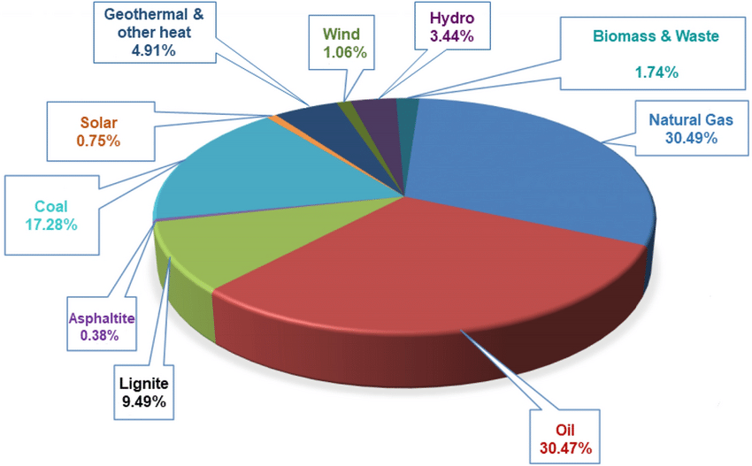

The Unseen Environmental Costs of Electric Vehicles
Are EVs truly as green as they seem?
Matthew Richman
Battery Production
One of the most common EV battery chemistries, lithium-ion has a significant impact on the environment.
Mining for lithium, cobalt, and nickel depletes natural resources and leads to water scarcity and pollution.
For example, "Mining for the materials used in EV batteries is a notoriously water-intensive process. Researchers estimate it
takes 500,000 to 2 million gallons of water to extract just one ton [of lithium]" (Landers, 2024). Even worse, the batteries
are often produced in drought-prone areas such as Chile leading to increased risk of drought.In fact, the carbon footprint of producing just one lithium-ion battery
is 74% higher than the production of an entire petrol car.
Electricity Generation
While EVs produce no tailpipe emissions, they rely on electricity from the power grid. In most regions, electricity
is still predominantly generated from one of three sources: coal, natural gas, and oil. This leads to charging an EV producing more greenhouse gases
than driving a petrol car. Transitioning the grid to renewable energy is essential to reducing the overall emissions of EVs.

Tire and Brake Pollution
Due to their heavier weight, EVs go through tires and brakes way faster than petrol cars. This produces a lot of particulate matter that ends up contributing to
air pollution and can settle into soil and waterways, harming the ecosystem. While EVs are able to convert some of their kinetic energy back into chemical
potential energy (in the form of batteries) from regenerative braking, this only starts to reduce the emissions.
.png)
Conclusion
Electric vehicles offer a clear advantage when it comes to reducing tailpipe emissions. However, the environmental costs in production, electricity generation,
and particulate emissions can't just be ignored. Everyone must work together towards solutions like better recycling of EV batteries, cleaner electricity production,
and advances in brake and tire technologies to truly make EVs a sustainable alternative.